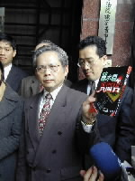

|  |
|
扁陣營律師團上午代表陳水扁、吳淑珍2名當事人，到台北地檢署按鈴控告台北市議員李慶元誹謗及違反選罷法。（記者王吟芳
攝影）
|
記者王吟芳 報導
總統大選互告熱潮繼續發燒，新黨籍台北市議員李慶元日前發表與候選人李敖合著的「陳水扁的真面目」新書中，指稱陳水扁「外遇事件」等內容，扁陣營斥為無稽，今天上午並由陳水扁、吳淑珍具名，委任律師團到台北地檢署按鈴控告李慶元誹謗及違反總統副總統選舉罷免法。
雖然「陳水扁的真面目」一書是由李慶元、李敖合著，但今天的被告只有李慶元1人。陳水扁委任律師范光群表示，陳水扁僅對李慶元提出告訴，並非「害怕」與李敖打官司，而是因為書中許多對陳水扁不實的指訴，都是出自李慶元具名的篇章，「李敖的部分大多只是謾罵而已，沒有具體內容」。
范光群表示，被告李慶元捏造陳水扁的外遇事件，在該書第135頁中，以「他的愛----擁抱阿珍是如此的痛苦？」為題，聲稱陳水扁在83年底選台北市長前曾發生外遇，對象為其助理，該女主角「由國外進修回國，陳水扁一度想將她安置在市政府工作，但遭吳淑珍出面制止」等等，均屬不實。(2000/03/09/勁報)